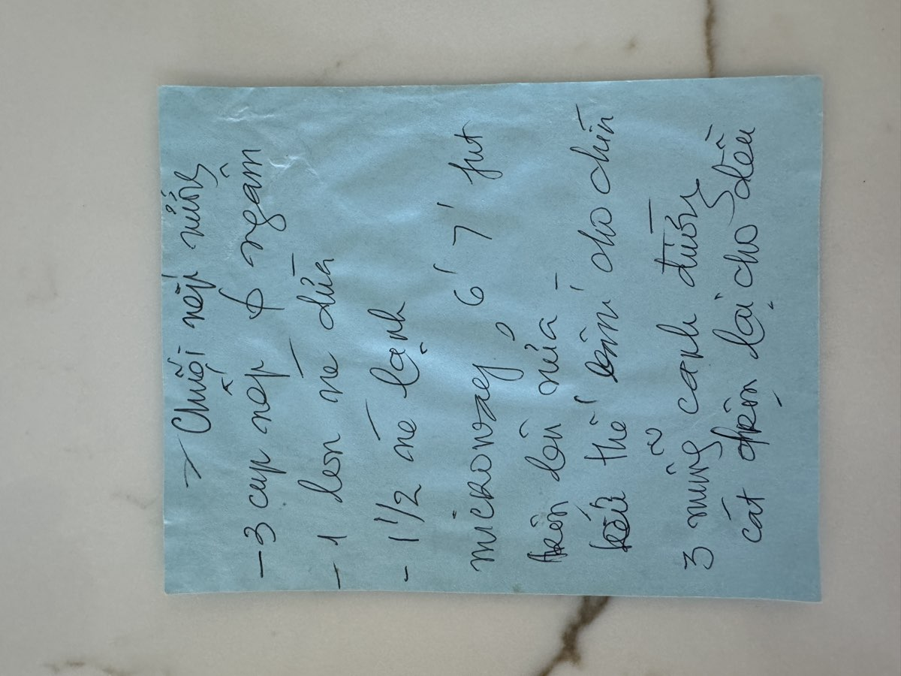
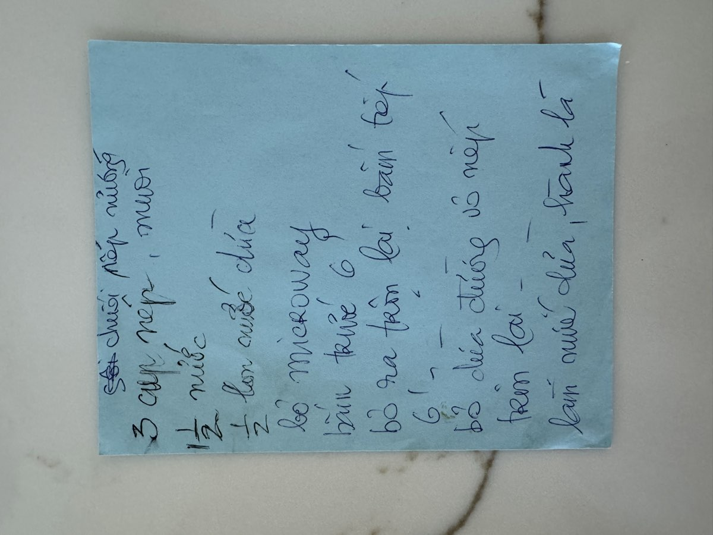
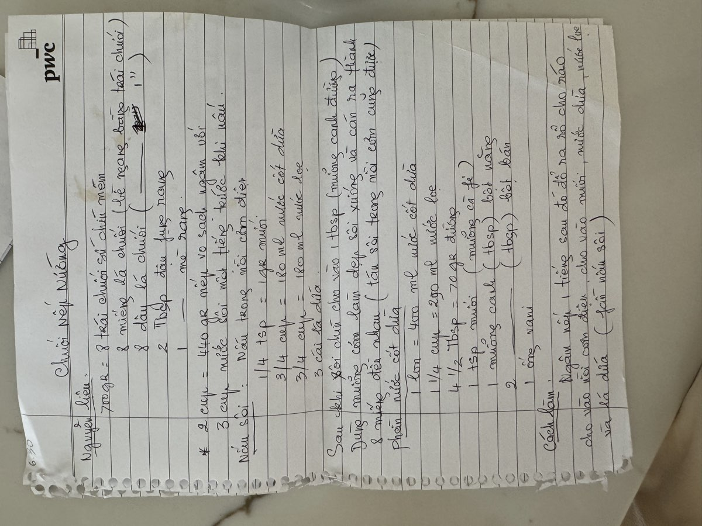
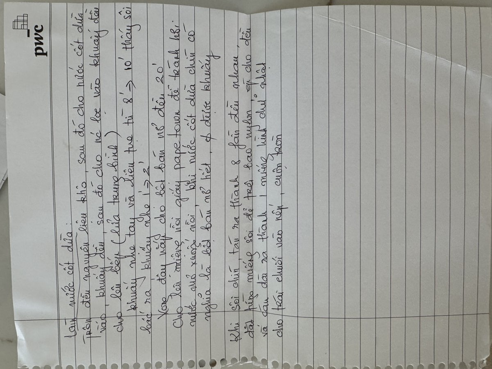

← Back to recipes
Chuối Nếp Nướng
Grilled Sticky Rice with Banana
From Mẹ — Oanh
Nguyên liệu · Ingredients
- 3 cups sticky rice (gạo nếp), soaked at least 1 hour
- 8 ripe bananas (chuối), slightly soft but firm
- 1 can (13.5 oz) coconut cream (nước cốt dừa)
- 1½ cups water
- 3 tablespoons sugar (đường)
- Pinch of salt (muối)
- Banana leaves, cut into rectangles for wrapping (lá chuối)
- 2 tablespoons oil (dầu)
Nước cốt dừa lá dứa · Pandan Coconut Sauce
- 1¼ cups coconut cream (nước cốt dừa)
- 1½ cups sugar (290g đường)
- ¼ teaspoon salt (muối)
- 1 tablespoon tapioca starch (bột năng)
- 1 teaspoon vanilla extract
Cách làm · Instructions
- Drain the soaked sticky rice. Combine with water, half the coconut cream, and salt. Microwave for 6–7 minutes. Take out and stir, then microwave again for another 6 minutes until the rice is cooked through.
- Add the sugar and remaining coconut cream to the cooked sticky rice. Mix well to combine.
- Prepare the banana leaves by wilting briefly over a flame or dipping in hot water to make them pliable. Cut into rectangles about the length of a banana.
- Peel the bananas. Lay a banana leaf rectangle on your work surface. Spread a layer of coconut sticky rice in the center. Place a banana on top, then cover with more sticky rice. Fold the banana leaf around the package and secure.
- Make the coconut sauce: In a saucepan, combine the coconut cream with sugar, salt, and vanilla. Bring to a simmer. Add the tapioca starch mixed with a little water and stir until the sauce thickens. Strain through a sieve.
- Grill the wrapped packages over medium heat, about 8–10 minutes per side, until the banana leaf is charred and the package feels firm.
- Unwrap and slice each package crosswise into rounds. Serve warm with the coconut sauce drizzled over top.
Công thức gốc · Original handwritten recipe




❦
A recipe from Mẹ's kitchen